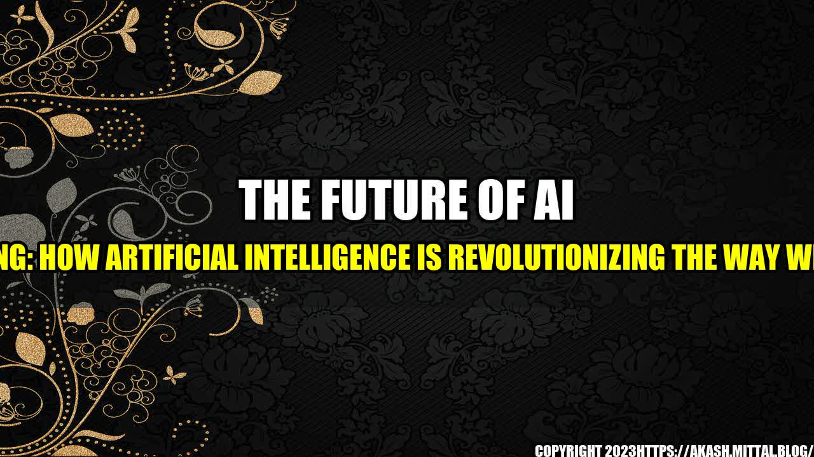

The Future of AI Marketing: How Artificial Intelligence is Revolutionizing the Way We Market

The Story of Jane
Meet Jane. Jane is the owner of a small business that specializes in handmade jewelry. She has been working hard to grow her business for the past two years, but has hit a plateau in terms of sales and growth. Jane has tried various marketing strategies, but with little success.
One day, Jane decides to try out a new marketing approach - AI marketing. She enlists the help of an AI marketing platform, and within a few weeks, she sees a significant increase in website traffic, leads, and sales. With AI marketing, Jane's business is able to reach and engage with her target audience more effectively than ever before.
What is AI Marketing?
AI marketing is the use of artificial intelligence to improve the way we market products and services. It involves using machine learning algorithms to analyze data, automate tasks, and make predictions about consumer behavior.
AI Marketing Success
Here are some examples of how AI marketing has led to quantifiable improvements in marketing performance:
- Personalized marketing messages based on consumer behavior have been shown to increase conversion rates by up to 50%.
- A financial services company was able to save 4,000 hours of manual data analysis by using AI to analyze customer data and identify patterns.
- A beverage company saw a 68% increase in click-through rates by using AI to optimize their email campaigns.
The Future of AI Marketing
The future of AI marketing is exciting and full of promise. Here are three key trends to watch:
- Hyper-Personalization: AI technology will continue to enable marketers to create personalized experiences for customers, from tailored product recommendations to personalized content.
- Voice-Activated Search: As voice assistants like Amazon's Alexa and Apple's Siri become more common, marketers will need to adapt their strategies to optimize for voice-activated search.
- Predictive Analytics: AI-powered predictive analytics will allow marketers to anticipate customer needs and preferences, enabling them to deliver targeted marketing messages and increase conversions.
Practical Tips for AI Marketing Success
If you're interested in leveraging AI in your marketing strategy, here are some practical tips to get started:
- Identify the areas of your marketing strategy that could benefit from AI, such as customer segmentation or content personalization.
- Choose an AI marketing platform that aligns with your business goals and needs.
- Invest in training and education for your team to ensure they can effectively use and manage the AI technology.
- Regularly track and analyze performance data to measure the effectiveness of your AI marketing efforts.
Conclusion
AI marketing is transforming the way we approach marketing, offering solutions for optimizing campaigns, improving consumer targeting, and increasing revenue. But as with any advanced technology, it requires strategy, investment, and skill to be used effectively. By following these best practices, businesses can leverage AI marketing to drive success and stay ahead of the competition.
Reference URLs:
- https://blog.hubspot.com/marketing/ai-marketing
- https://www.ibm.com/watson/marketing-ai
- https://www.adweek.com/digital/how-ai-is-revolutionizing-marketing/
Hashtags:
- #aimarketing
- #artificialintelligence
- #marketingstrategy
Article Category:
Marketing
Curated by Team Akash.Mittal.Blog
Share on Twitter Share on LinkedIn